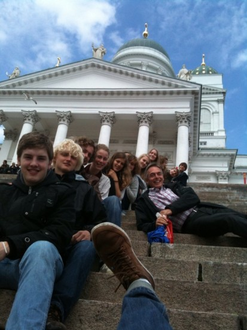

2015

die Jugend zurückgebracht
Von Udo Mönks
Das Salonorchester erfreute die Senioren im St. Elisabeth Haus in Bad Meinberg am ,,Musiknachmittag". Einige Zuhörer berichteten von persönlichen Erinnerungen zu den Musikstücken: ,,Zu Bel Ami habe ich immer mit meinem Bruder getanzt. Der war sechs Jahre älter als ich." ,,Wenn die Elisabeth nicht so schöne Beine hätt'", jubelte eine andere Zuhörerin. ,,Sie haben unseren Bewohnern durch die Musik ihre Jugend zurück gebracht'', bilanzierte eine Mitarbeiterin des Hauses. ,,So lebhaft haben sie zugehört und haben im Takt mitgewippt!" Den Mitgliedern des Salonorchesters hat die Musikstunde viel Spaß gemacht!
2010
Exkursion nach Savonlinna

Beschwerlicher Flug
Die erste Nachricht der Finnland-Expedition des Salonorchesters
Von Udo Mönks
Liebe Grabbianer!
Grüße aus Helsinki sendet das Salonorchester. Nach einem
beschwerlichen Flug mit Zwischenlandung in Berlin sind wir hier gut
angekommen. Bei frischen 15 Grad Celsius genießen wir die Sonne auf
dem Domplatz und den Blick auf den Hafen und die Festung Suomenlinna.
Morgen geht es weiter an der russischen Grenze entlang nach
Savonlinna, wo wir echt finnisch wohnen werden. Die finnische Sonne im
Saimanseengebiet macht die Nacht kurz. Das Foto zeigt das
Salonorchester vor der Kulisse des Doms.
2009
Exkursion nach Savonlinna

Mittagessen um halb elf
In Finnland sind die Verhältnisse manchmal etwas anders
Von Maxi Weiß
Donnerstag, 14:30 Uhr: Abfahrt am Kronenplatz. Wir sind 3 Stunden bis nach Düsseldorf unterwegs und steigen dort um 9 Uhr in den Flieger nach Helsinki. Schon in der Luft sehen wir die ersten Anzeichen fuer neue klimatische Verhältnisse: Kurz vor Helsinki rasen Schneeflocken an uns vorbei. Nach der Landung im ,,Schneesturm" wurden wir zu unserem Hotel gefahren.
Dienstag: Auch diesen Morgen kommen wir in den Genuss der finnischen Spezialität (zugegeben: man gewöhnt sich dran. Es handelt sich uebrigens um ganz normales "Porridge", also Haferbrei.) Dem fruehen Aufstehen (8 Uhr nach finnischer Zeit) zum Trotz hängen wir direkt eine ausgiebige Probe in der Schulaula "Melatinsalli" dran - fuer den Auftritt im "Promenadikonserti" am heutigen Abend. Mittags haben wir einen kurzen Auftritt in einem örtlichen Altenheim, den wir leider ohne Klavier bestreiten muessen - einige Damen und Herren erkannten unsere Melodien trotzdem wieder und freuten sich. Abends dann die grosse Auffuehrung: Wir eroeffnen das dreieinhalbstuendige Konzert, in dem Klassik, Pop- und Volksmusik bunt gemischt sind, mit drei von unseren Stuecken und kommen damit ziemlich gut an. Dann lassen wir die Nacht beim "Grilli" mit einem "Hampurilainen (Hamburger)" ausklingen.
Mittwoch und Donnerstag: Wir verabschieden uns von unseren Gastgebern in der Schule und machen uns auf den Weg nach Helsinki. Dabei kommen wir auch am Skisprungort "Lahti" vorbei und wohnen sogar einigen Probespruengen finnischer Springer bei. Nachdem wir unser Hotel bezogen haben, schlagen wir uns in einem AllYouCanEat-Restaurant den Bauch voll.
Donnerstag: Morgens besichtigen wir ein paar von Helsinkis Attraktionen: den Dom (wo wir unser obligatorisches Gruppenfoto machen), die russisch-orthodoxe Kirche, den Hafen mitsamt angrenzender Markthalle. Wir haben nicht viel Zeit, denn schon um 13 Uhr legt die kleine Fähre ab, die uns zur anliegenden Insel Suomenlinna bringt (stolze 850 Einwohner). Uns begleitet dabei der langjährige Salonkiorkesteri-Freund Peter Sandin mitsamt seiner Familie, der uns sogar auf eine Suppe einlädt. Wir machen danach einen Inselrundgang, auf dem wir die alten Festungsanlagen besichtigen, die Helsinki seit dem Mittelalter vor seinen Feinden beschuetzen. Wieder zurück auf dem Festland haben wir ein bisschen Zeit für uns, in der auch dieser Bericht gerade geschrieben wird ;)
Freitag werden wir dann hoffentlich gesund und munter wieder in Düsseldorf landen. Die sibirischen Kälten haben wir ja ,,leider" verpasst: Ab Samstag soll es in Helsinki wieder Temperaturen von -20 Grad annehmen.